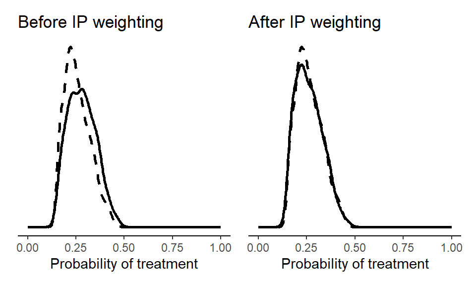
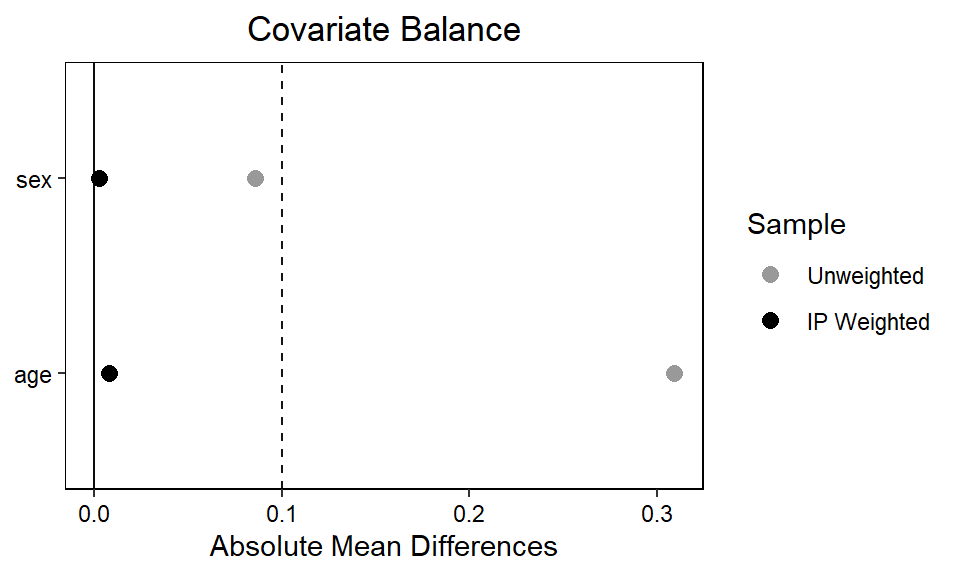

Chapter 4 Adventures in G-methods
4.1 Doubly robust estimation
For demonstrating a ‘doubly robust’ estimator that combines IPW and g-computation, we use the nhefs data from the causaldata package (Huntington-Klein and Barrett 2021). This data come from the National Health and Nutrition Examination Survey Data I Epidemiologic Follow-up Study.
We first calculate stabilized IP weights.
treat_mod <- glm(qsmk ~ sex + age,
data = d,
family = "binomial")
d$pX <- predict(treat_mod, type = "response")
pn <- glm(qsmk ~ 1,
data = d,
family = "binomial")
d$pnX <- predict(pn, type = "response")
d$sw <- with(d, ifelse(qsmk==1, pnX/pX, (1-pnX)/(1-pX)))We can then plot the sample before and after weighting.
library(ggplot2)
library(patchwork)
p1 <- ggplot() +
# X = 1 (sample)
geom_density(data = subset(d, qsmk == 1),
aes(x = pX), size = 1) +
# X = 0 (sample)
geom_density(data = subset(d, qsmk == 0),
aes(x = pX), linetype = "dashed", size = 1) +
theme_classic() +
theme(
axis.text.y = element_blank(),
axis.ticks.y = element_blank(),
axis.title.y = element_blank(),
axis.line.y = element_blank()) +
xlim(c(0,1)) + xlab("Probability of treatment") +
ggtitle("Before IP weighting")
p2 <- ggplot() +
# X = 1 (pseudo-population)
geom_density(data = subset(d, qsmk == 1),
aes(x = pX, weight = sw), size = 1) +
# X = 0 (pseudo-population)
geom_density(data = subset(d, qsmk == 0),
aes(x = pX, weight = sw), linetype = "dashed", size = 1) +
theme_classic() +
theme(
axis.text.y = element_blank(),
axis.ticks.y = element_blank(),
axis.title.y = element_blank(),
axis.line.y = element_blank()) +
xlim(c(0,1)) + xlab("Probability of treatment") +
ggtitle("After IP weighting")
(p1 + p2)
We can also make a ‘love plot’ using the cobalt package (Greifer 2024) to inspect whether the IP weights ensures acceptable balance on the level of individual covariates. By setting continuous = "std", we indicate that the function should return the standardized absolute mean difference for any continuous variables (here, age). If we wanted the raw absolute mean difference, we’d set continuous = "raw".
library(cobalt)
love.plot(treat_mod, abs = TRUE,
sample.names = c("Unweighted", "IP Weighted"),
weights = d$sw,
colors = c("grey60", "black"),
thresholds = c(m = .1))
bal.tab(treat_mod, abs = TRUE, un = TRUE, thresholds = c(m = .1), weights = d$sw, continuous = "std")$BalanceFinally, we include the stabilized weights in an outcome model, which we in turn use for g-computation.
out_mod <- lm(wt82_71 ~ qsmk + sex + age, data = d, weights = sw)
EX1 <- predict(out_mod,
newdata = transform(d, qsmk = 1))
EX0 <- predict(out_mod,
newdata = transform(d, qsmk = 0))
mean(EX1)-mean(EX0)## [1] 3.0392864.1.1 Bootstrapping
The basic approach to bootstrapping is similar as in the previous chapter. Here, we bootstrap the doubly robust estimator from above. We use only 100 bootstrap samples, but in practice we’d often want more.
library(boot)
# Number of bootstrap samples
n_bootstrap <- 100
bootstrap_analysis <- function(data, indices) {
# Resample the data
d <- data[indices, ]
# IPW
treat_mod <- glm(qsmk ~ sex + age,
data = d,
family = "binomial")
d$pX <- predict(treat_mod, type = "response")
pn <- glm(qsmk ~ 1,
data = d,
family = "binomial")
d$pnX <- predict(pn, type = "response")
d$sw <- with(d, ifelse(qsmk==1, pnX/pX, (1-pnX)/(1-pX)))
# G-computation with IP weighted outcome model
out_mod <- lm(wt82_71 ~ qsmk + sex + age, data = d, weights = sw)
EX1 <- predict(out_mod,
newdata = transform(d, qsmk = 1))
EX0 <- predict(out_mod,
newdata = transform(d, qsmk = 0))
mean(EX1)-mean(EX0)
# Return the coefficient of X
return(mean(EX1)-mean(EX0))
}
# Perform bootstrapping
bootstrap_results <- boot(data = d,
statistic = bootstrap_analysis,
R = n_bootstrap)
# Summarize the bootstrap results
bootstrap_summary <- boot.ci(bootstrap_results, type = "norm")
# Print the results
print(bootstrap_summary)## BOOTSTRAP CONFIDENCE INTERVAL CALCULATIONS
## Based on 100 bootstrap replicates
##
## CALL :
## boot.ci(boot.out = bootstrap_results, type = "norm")
##
## Intervals :
## Level Normal
## 95% ( 2.092, 3.909 )
## Calculations and Intervals on Original Scale4.1.2 More covariates
We can try the same analysis but with a more comprehensive set of covariates.
library(boot)
bootstrap_analysis <- function(data, indices) {
# Resample the data
d <- data[indices, ]
# IPW
# see: https://remlapmot.github.io/cibookex-r/ip-weighting-and-marginal-structural-models.html
treat_mod <- glm(qsmk ~ sex + race + age + I(age ^ 2) +
as.factor(education) + smokeintensity +
I(smokeintensity ^ 2) + smokeyrs + I(smokeyrs ^ 2) +
as.factor(exercise) + as.factor(active) + wt71 + I(wt71 ^ 2),
data = d,
family = "binomial")
d$pX <- predict(treat_mod, type = "response")
pn <- glm(qsmk ~ 1,
data = d,
family = "binomial")
d$pnX <- predict(pn, type = "response")
d$sw <- with(d, ifelse(qsmk==1, pnX/pX, (1-pnX)/(1-pX)))
# G-computation with IP weighted outcome model
out_mod <- lm(wt82_71 ~ qsmk + sex + race + age + I(age ^ 2) +
as.factor(education) + smokeintensity +
I(smokeintensity ^ 2) + smokeyrs + I(smokeyrs ^ 2) +
as.factor(exercise) + as.factor(active) + wt71 + I(wt71 ^ 2),
data = d, weights = sw)
EX1 <- predict(out_mod,
newdata = transform(d, qsmk = 1))
EX0 <- predict(out_mod,
newdata = transform(d, qsmk = 0))
mean(EX1)-mean(EX0)
# Return the coefficient of X
return(mean(EX1)-mean(EX0))
}
# Perform bootstrapping
bootstrap_results <- boot(data = d,
statistic = bootstrap_analysis,
R = n_bootstrap)
# Summarize the bootstrap results
bootstrap_summary <- boot.ci(bootstrap_results, type = "norm")
# Print the results
print(bootstrap_summary)## BOOTSTRAP CONFIDENCE INTERVAL CALCULATIONS
## Based on 100 bootstrap replicates
##
## CALL :
## boot.ci(boot.out = bootstrap_results, type = "norm")
##
## Intervals :
## Level Normal
## 95% ( 2.620, 4.393 )
## Calculations and Intervals on Original ScaleThe overall inference is the same, although the more comprehensive adjustment set yields a slightly higher point estimate (around 3.5 kg), indicating that quitters gain even more weight than previously estimated.
4.2 Bootstrapped sub-group analysis
bootstrap_analysis <- function(data, indices) {
# Resample the data
d <- data[indices, ]
# IPW
pn_sub <- glm(qsmk ~ 1 + sex, data = d, family = "binomial")
d$pnX <- predict(pn_sub, type = "response")
d$sw <- with(d, ifelse(qsmk == 1, pnX / pX, (1 - pnX) / (1 - pX)))
# G-computation with IP weighted outcome model
out_mod <- glm(wt82_71 ~ qsmk + sex + age + qsmk * sex, data = d, weights = sw)
EX1S1 <- predict(out_mod, newdata = transform(d, qsmk = 1, sex = as.factor(1)))
EX1S0 <- predict(out_mod, newdata = transform(d, qsmk = 1, sex = as.factor(0)))
EX0S1 <- predict(out_mod, newdata = transform(d, qsmk = 0, sex = as.factor(1)))
EX0S0 <- predict(out_mod, newdata = transform(d, qsmk = 0, sex = as.factor(0)))
mean_diff_S1 <- mean(EX1S1) - mean(EX0S1)
mean_diff_S0 <- mean(EX1S0) - mean(EX0S0)
return(c(mean_diff_S1, mean_diff_S0))
}
# Perform bootstrapping
bootstrap_results <- boot(data = d, statistic = bootstrap_analysis, R = n_bootstrap)
# Extract and display results
boot.ci(bootstrap_results, type = "norm", index = 1) # For females## BOOTSTRAP CONFIDENCE INTERVAL CALCULATIONS
## Based on 100 bootstrap replicates
##
## CALL :
## boot.ci(boot.out = bootstrap_results, type = "norm", index = 1)
##
## Intervals :
## Level Normal
## 95% ( 1.619, 4.043 )
## Calculations and Intervals on Original Scale## BOOTSTRAP CONFIDENCE INTERVAL CALCULATIONS
## Based on 100 bootstrap replicates
##
## CALL :
## boot.ci(boot.out = bootstrap_results, type = "norm", index = 2)
##
## Intervals :
## Level Normal
## 95% ( 2.291, 4.585 )
## Calculations and Intervals on Original Scale4.3 Complex longitudinal designs
In the book, we walk through a g-computation approach to a complex longitudinal data context with a time-varying treatment. Here, we show a stabilized IPW approach. The trick is to compute two sets of weights, one for each time point and adjustment set. These weights can then be combined with multiplication in a single marginal structural model that recovers the simulated true effects of 0.
set.seed(1747)
n <- 1e4
U <- rnorm(n, 0, 1)
Z_0 <- rbinom(n, 1, plogis(0.5))
X_0 <- rbinom(n, 1, plogis(0.5 + Z_0 * 0.5))
Z_1 <- rbinom(n, 1, plogis(0.5 + X_0 * 0.5 + U * 0.5))
X_1 <- rbinom(n, 1, plogis(0.5 + Z_1 * 0.5))
Y <- rnorm(n, 10 + U * 2)
dat <- data.frame(Y = Y, X_0 = X_0, X_1 = X_1,
Z_0 = Z_0, Z_1 = Z_1, U = U)# IPW estimation for X_0
# Fit propensity score model (denominator)
ps_model_X0 <- glm(X_0 ~ Z_0 + X_1, family = "binomial", data = dat)
dat$ps_X0 <- predict(ps_model_X0, type = "response")
# Fit numerator model
num_model_X0 <- glm(X_0 ~ Z_0, family = "binomial", data = dat)
dat$num_ps_X0 <- predict(num_model_X0, type = "response")
# Calculate stabilized weights
dat$sw_X0 <- with(dat,
ifelse(X_0 == 1,
num_ps_X0/ps_X0,
(1-num_ps_X0)/(1-ps_X0)))# IPW estimation for X_1
# Fit propensity score model (denominator)
ps_model_X1 <- glm(X_1 ~ X_0 + Z_1, family = "binomial", data = dat)
dat$ps_X1 <- predict(ps_model_X1, type = "response")
# Fit numerator model
num_model_X1 <- glm(X_1 ~ X_0, family = "binomial", data = dat)
dat$num_ps_X1 <- predict(num_model_X1, type = "response")
# Calculate stabilized weights
dat$sw_X1 <- with(dat,
ifelse(X_1 == 1,
num_ps_X1/ps_X1,
(1-num_ps_X1)/(1-ps_X1)))##
## Call:
## lm(formula = Y ~ X_0 + X_1, data = dat, weights = sw_X0 * sw_X1)
##
## Coefficients:
## (Intercept) X_0 X_1
## 10.009573 -0.039207 0.0072374.4 More complexity
In the book, we show a complicated DAG adapted from VanderWeele, Jackson, and Li (2016) of a complex longitudinal exposure-outcome feedback setting. Here, we verify that the adjustment strategy suggested in the book holds true in a simulated setting. While in this particular simulated example the model coefficients for X1, X2 and X3 in their respective focal models coincide with the marginal estimates we’re after, we want to practice a more general workflow for when it really matters. So, we both show a g-computation approach and a stabilized IPW approach.
First, we simulate some data consistent with the complex DAG.
# Seed for reproducibility
set.seed(42)
# Define sample size
n <- 1e4
# Simulate time-varying relationships
C <- rnorm(n)
Z1 <- rnorm(n, C) + rnorm(n)
X1 <- rbinom(n, 1, plogis(C + rnorm(n)))
X2 <- rbinom(n, 1, plogis(C + X1 + Z1 + rnorm(n)))
Z2 <- rnorm(n, C + Z1 + X1) + rnorm(n)
X3 <- rbinom(n, 1, plogis(C + X2 + Z2 + rnorm(n)))
Z3 <- rnorm(n, C + Z2 + X2) + rnorm(n)
# Simulate outcome
Y <- X1 + X2 + X3 + Z3 + C + rnorm(n)
# Create dataset
d <- data.frame(C, Z1, Z2, Z3, X1, X2, X3, Y)Next, we fit a model for each measurement time point, and we see that all three models pick up the true effects within simulation error. The true effects are 2, 2 and 1, respectively, for the three time points. It’s 2 for the first two time points, because these effects include paths running through Z2/Z3.
4.4.1 G-computation
There are no new tricks here compared to what we showcase in the book, except we’re breaking down our joint effect estimand into separate models.
# Model to estimate effect of X1 on Y
model_X1 <- glm(Y ~ X1 + X2 + Z1 + C, data = d)
EX11 <- predict(model_X1, newdata = transform(d, X1 = 1))
EX10 <- predict(model_X1, newdata = transform(d, X1 = 0))
mean(EX11 - EX10)## [1] 2.083152# Model to estimate effect of X2 on Y
model_X2 <- lm(Y ~ X1 + X2 + X3 + Z1 + Z2 + C, data = d)
EX21 <- predict(model_X2, newdata = transform(d, X2 = 1))
EX20 <- predict(model_X2, newdata = transform(d, X2 = 0))
mean(EX21 - EX20)## [1] 1.988808# Model to estimate effect of X3 on Y
model_X3 <- lm(Y ~ X2 + X3 + Z2 + C, data = d)
EX31 <- predict(model_X3, newdata = transform(d, X3 = 1))
EX30 <- predict(model_X3, newdata = transform(d, X3 = 0))
mean(EX31 - EX30)## [1] 0.99872024.4.2 IPW
We follow the same recipe for stabilized IPW as given in the book.
# IPW estimation for X1
# Fit propensity score model (denominator)
ps_model_X1 <- glm(X1 ~ C + X2 + Z1, family = "binomial", data = d)
d$ps_X1 <- predict(ps_model_X1, type = "response")
# Fit numerator model
num_model_X1 <- glm(X1 ~ C, family = "binomial", data = d)
d$num_ps_X1 <- predict(num_model_X1, type = "response")
# Calculate stabilized weights
d$sw_X1 <- with(d,
ifelse(X1 == 1,
num_ps_X1/ps_X1,
(1-num_ps_X1)/(1-ps_X1)))
# Marginal structural model
lm(Y ~ X1 + C, data = d, weights = sw_X1)##
## Call:
## lm(formula = Y ~ X1 + C, data = d, weights = sw_X1)
##
## Coefficients:
## (Intercept) X1 C
## 1.663 2.091 4.831# IPW estimation for X2
# Fit propensity score model (denominator)
ps_model_X2 <- glm(X2 ~ X1 + X3 + Z1 + Z2 + C, family = "binomial", data = d)
d$ps_X2 <- predict(ps_model_X2, type = "response")
# Fit numerator model
num_model_X2 <- glm(X2 ~ C, family = "binomial", data = d)
d$num_ps_X2 <- predict(num_model_X2, type = "response")
# Calculate stabilized weights
d$sw_X2 <- with(d,
ifelse(X2 == 1,
num_ps_X2/ps_X2,
(1-num_ps_X2)/(1-ps_X2)))
# Marginal structural model
lm(Y ~ X2 + C, data = d, weights = sw_X2)##
## Call:
## lm(formula = Y ~ X2 + C, data = d, weights = sw_X2)
##
## Coefficients:
## (Intercept) X2 C
## 1.549 2.108 4.645# IPW estimation for X3
# Fit propensity score model (denominator)
ps_model_X3 <- glm(X3 ~ X2 + Z2 + C, family = "binomial", data = d)
d$ps_X3 <- predict(ps_model_X3, type = "response")
# Fit numerator model
num_model_X3 <- glm(X3 ~ C, family = "binomial", data = d)
d$num_ps_X3 <- predict(num_model_X3, type = "response")
# Calculate stabilized weights
d$sw_X3 <- with(d,
ifelse(X3 == 1,
num_ps_X3/ps_X3,
(1-num_ps_X3)/(1-ps_X3)))
# Marginal structural model
lm(Y ~ X3 + Z3 + C, data = d, weights = sw_X3)##
## Call:
## lm(formula = Y ~ X3 + Z3 + C, data = d, weights = sw_X3)
##
## Coefficients:
## (Intercept) X3 Z3 C
## 0.8849 1.0250 1.1221 0.9908Instead of fitting a marginal structural model (MSM) for each time point, we can fit a single MSM for all three time points in one go. The trick here is to multiply the weights. However, this targets a slightly different estimand, since we want to adjust for Z3 to get a more precise estimate for X3 but including Z3 in the MSM blocks the the effect of X1 and X2 that runs through Z3. That is, this alternative specification targets only the direct effect of the exposures.
##
## Call:
## lm(formula = Y ~ X1 + X2 + X3 + Z3 + C, data = d, weights = sw_X1 *
## sw_X2 * sw_X3)
##
## Coefficients:
## (Intercept) X1 X2 X3 Z3 C
## -0.01181 0.99327 0.98364 1.00694 1.00863 0.96940For further details on estimating time-varying relationships with IPW, see VanderWeele, Jackson, and Li (2016).
4.5 Session info
## R version 4.4.0 (2024-04-24 ucrt)
## Platform: x86_64-w64-mingw32/x64
## Running under: Windows 10 x64 (build 19045)
##
## Matrix products: default
##
##
## locale:
## [1] LC_COLLATE=Danish_Denmark.utf8 LC_CTYPE=Danish_Denmark.utf8
## [3] LC_MONETARY=Danish_Denmark.utf8 LC_NUMERIC=C
## [5] LC_TIME=Danish_Denmark.utf8
##
## time zone: Europe/Copenhagen
## tzcode source: internal
##
## attached base packages:
## [1] stats graphics grDevices utils datasets methods base
##
## other attached packages:
## [1] cobalt_4.5.5 causaldata_0.1.3 sandwich_3.1-0 patchwork_1.2.0
## [5] ggplot2_3.5.1
##
## loaded via a namespace (and not attached):
## [1] gtable_0.3.5 tensorA_0.36.2.1 xfun_0.44
## [4] bslib_0.7.0 QuickJSR_1.1.3 inline_0.3.19
## [7] lattice_0.22-6 vctrs_0.6.5 tools_4.4.0
## [10] generics_0.1.3 stats4_4.4.0 parallel_4.4.0
## [13] tibble_3.2.1 fansi_1.0.6 highr_0.11
## [16] pkgconfig_2.0.3 brms_2.21.0 Matrix_1.7-0
## [19] checkmate_2.3.1 distributional_0.4.0 RcppParallel_5.1.7
## [22] lifecycle_1.0.4 compiler_4.4.0 farver_2.1.2
## [25] stringr_1.5.1 Brobdingnag_1.2-9 munsell_0.5.1
## [28] codetools_0.2-20 htmltools_0.5.8.1 sass_0.4.9
## [31] bayesplot_1.11.1 yaml_2.3.8 crayon_1.5.2
## [34] pillar_1.9.0 jquerylib_0.1.4 cachem_1.1.0
## [37] StanHeaders_2.32.9 bridgesampling_1.1-2 abind_1.4-5
## [40] nlme_3.1-164 posterior_1.5.0 rstan_2.32.6
## [43] tidyselect_1.2.1 digest_0.6.35 mvtnorm_1.2-5
## [46] stringi_1.8.4 dplyr_1.1.4 bookdown_0.39
## [49] labeling_0.4.3 splines_4.4.0 fastmap_1.2.0
## [52] grid_4.4.0 colorspace_2.1-0 cli_3.6.2
## [55] magrittr_2.0.3 loo_2.7.0 pkgbuild_1.4.4
## [58] utf8_1.2.4 withr_3.0.0 scales_1.3.0
## [61] backports_1.5.0 estimability_1.5.1 rmarkdown_2.27
## [64] matrixStats_1.3.0 emmeans_1.10.4 gridExtra_2.3
## [67] chk_0.9.1 zoo_1.8-12 coda_0.19-4.1
## [70] evaluate_0.23 knitr_1.47 mgcv_1.9-1
## [73] rstantools_2.4.0 rlang_1.1.3 Rcpp_1.0.12
## [76] xtable_1.8-4 glue_1.7.0 rstudioapi_0.16.0
## [79] jsonlite_1.8.8 R6_2.5.1